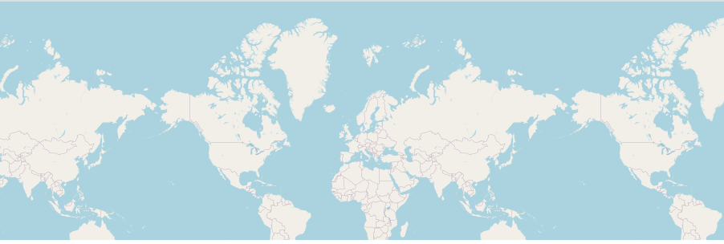
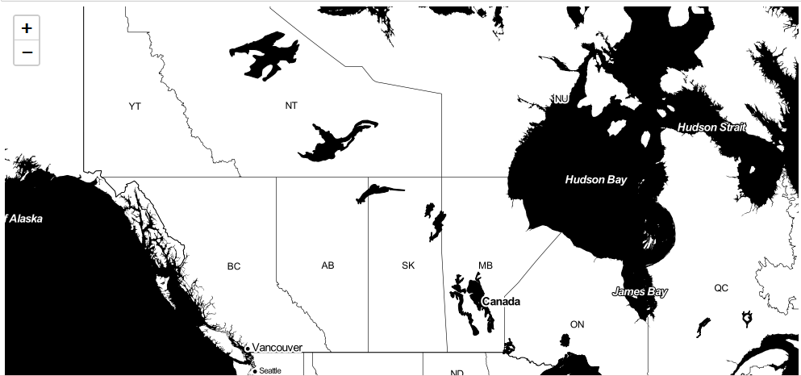
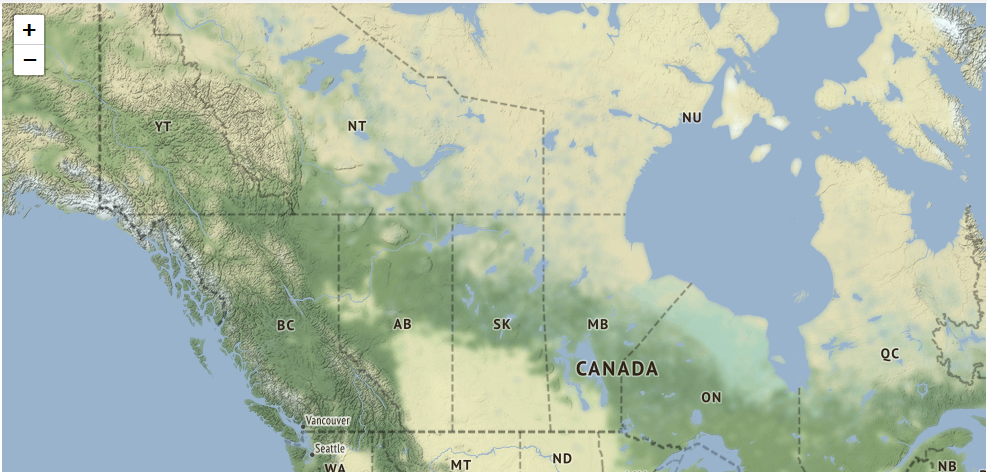
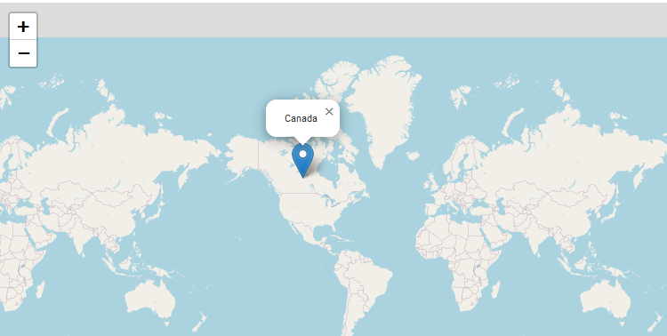
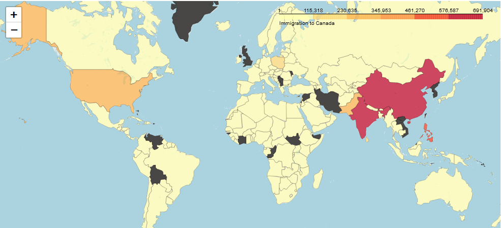
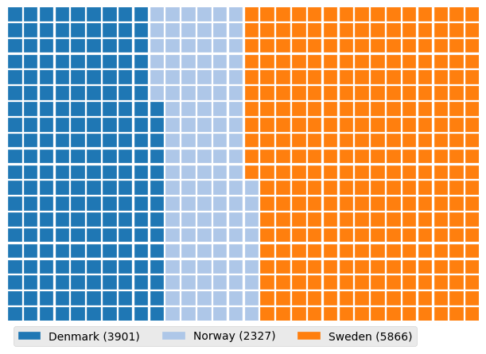
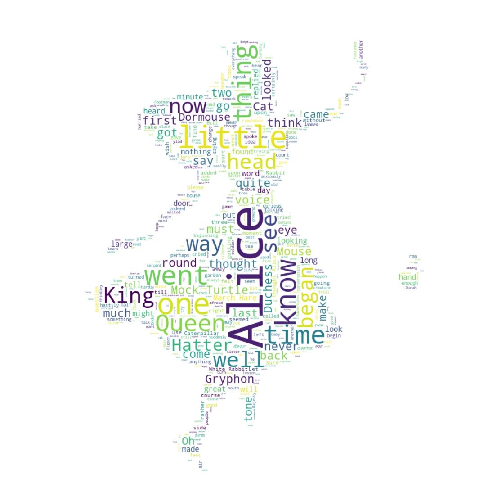
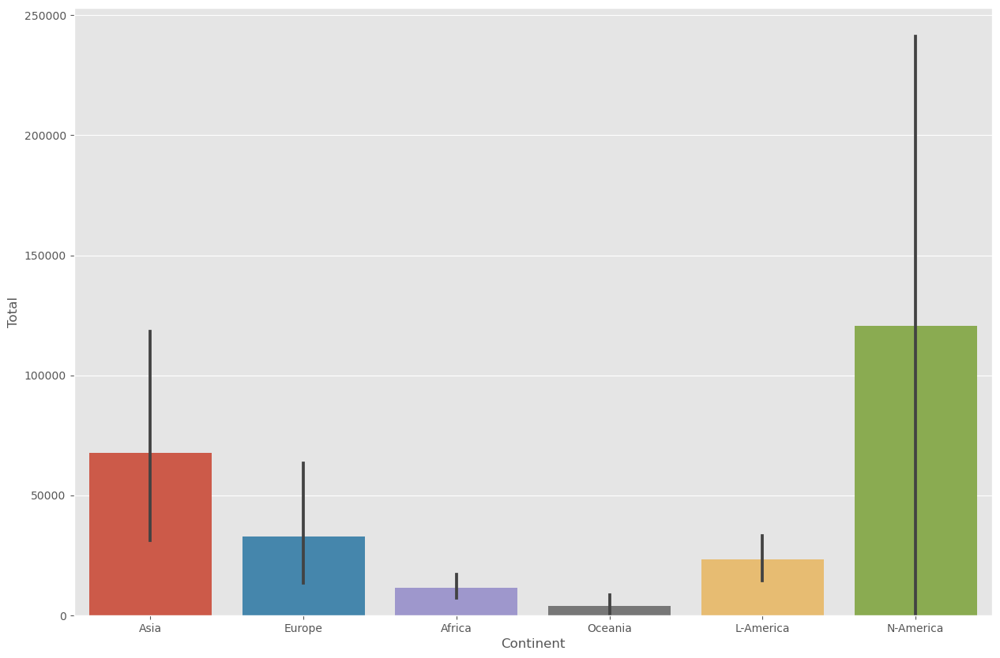
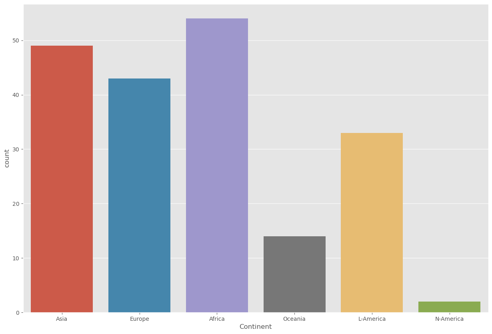

| Function |
Description |
Syntax |
Example |
Visual |
| Folium |
| Map |
Create a map object with specified center coordinates and zoom level. |
folium.Map(location=[lat, lon], zoom_start=n) |
world_map = folium.Map()
canada = folium.Map(location=[56.130, -106.35], zoom_start=4)
|
 |
| Marker |
Add a marker to the map with custom icon, popup, and tiles |
folium.Marker(location=[lat , lon ], popup='Marker Popup', tiles='Stamen Toner').add_to(map) |
folium.Marker(location=[56.130, -106.35],
tooltip='Marker',
tiles='Stamen Toner').add_to(world_map)
|
 |
| Circle |
Add a circle to the map with specified radius, color, and fill opacity. |
folium.features.CircleMarker(location=[lat, lon], radius=n, color='red', fill_opacity=n).add_to(map) |
folium.features.CircleMarker(location=[56.130, -106.35],
radius=1000, color='red',
fill_opacity=0.5).add_to(world_map)
|
 |
| Chorpleth |
Create a choropleth map based on a GeoJSON file and a specified data column. |
folium.Choropleth(geo_data='path/to/geojson_file',
data=df, columns=['region', 'value_column'],
key_on='feature.properties.id', fill_color='YlGnBu',
fill_opacity=0.7, line_opacity=0.2,
legend_name='Legend').add_to(map) |
world_map.choropleth(geo_data=world_geo,
data=df_can, columns=['Country', 'Total'],
key_on='feature.properties.name', fill_color='YlOrRd',
fill_opacity=0.7,line_opacity=0.2,
legend_name='Immigration to Canada')
|
 |
| PyWaffle |
| Waffle |
Create a waffle chart based on values and categories. |
plt.figure(FigureClass=Waffle, rows=20, columns=30, values=values) |
plt.figure(FigureClass=Waffle, rows=20, columns=30,
values=df_dsn['Total'], cmap_name='tab20',
legend={'labels': label, 'loc': 'lower left',
'bbox_to_anchor': (0, -0.1), 'ncol': 3})
|
 |
| Legend |
Add a legend to the waffle chart. |
waffle_chart.legend(loc='upper left', bbox_to_anchor=(1, 1)) |
|
|
| Title |
Add a title to the waffle chart. |
waffle_chart.set_title('Waffle Chart Title') |
|
|
| Labels |
Add labels to the waffle chart. |
waffle_chart.set_labels(['Label 1', 'Label 2', ...]) |
|
|
| WordCloud |
| WordCloud |
Create a word cloud object based on text data. |
wordcloud = WordCloud().generate(text_data) |
alice_wc = WordCloud(background_color='white', max_words=2000, mask=alice_mask, stopwords=stopwords)
alice_wc.generate(alice_novel)
plt.imshow(alice_wc, interpolation='bilinear')
|
 |
| Generate |
Generate the word cloud based on the text data. |
wordcloud.generate(text_data) |
|
|
| Display |
Display the word cloud using matplotlib or other plotting libraries. |
plt.imshow(wordcloud, interpolation='bilinear') |
|
|
| Options |
Set various options for the word cloud, such as font, colors, mask, and stopwords. |
wordcloud = WordCloud(font_path='path/to/font_file',
background_color='white',
colormap='Blues', mask=mask_image,
stopwords=stopwords).generate(text_data) |
|
|
| Seaborn |
| barplot |
Create a bar plot to visualize the relationship between a categorical variable and a numeric variable. |
sns.barplot(x='x_variable', y='y_variable', data=dataframe) |
sns.barplot(x='Continent', y='Total', data=df_can1)
|
 |
| countplot |
Create a count plot to display the frequency of each category in a categorical variable.Create a count plot to display the frequency of each category in a categorical variable. |
sns.countplot(x='category', data=dataframe) |
sns.countplot(x='Continent', data=df_can)
|
 |
| regplot |
Create a scatter plot with a linear regression line to visualize the relationship between two numeric variables. |
sns.regplot(x='x_variable', y='y_variable', data=dataframe) |
sns.regplot(x='year', y='total', data=df_tot)
|
 |